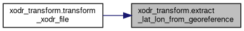
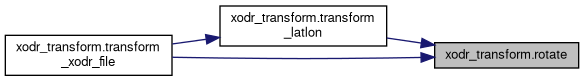
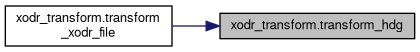
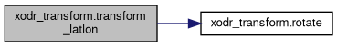
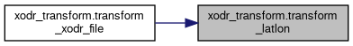
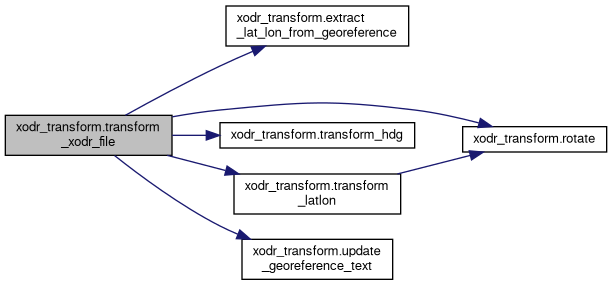
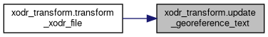

- Generated on Thu Aug 6 2026 16:15:51 for Carma-platform by
 1.9.4
1.9.4
|
Carma-platform v4.11.0
CARMA Platform is built on robot operating system (ROS) and utilizes open source software (OSS) that enables Cooperative Driving Automation (CDA) features to allow Automated Driving Systems to interact and cooperate with infrastructure and other vehicles through communication.
|
Functions | |
| def | extract_lat_lon_from_georeference (geo_text) |
| def | update_georeference_text (old_text, new_lat, new_lon) |
| def | rotate (x, y, angle_deg) |
| def | transform_latlon (lat, lon, transformer_from_orig_to_utm, transformer_from_utm_to_new, angle_deg) |
| def | transform_hdg (hdg, angle_deg) |
| def | transform_xodr_file (input_path, output_path) |
Variables | |
| parser = argparse.ArgumentParser(description="Transform XODR GPS-coordinates with a new geoReference and rotation.") | |
| help | |
| args = parser.parse_args() | |
| def xodr_transform.extract_lat_lon_from_georeference | ( | geo_text | ) |
Extracts lat_0 and lon_0 from the geoReference WKT string.
Definition at line 34 of file xodr_transform.py.
References create_two_lane_map.float.
Referenced by transform_xodr_file().

| def xodr_transform.rotate | ( | x, | |
| y, | |||
| angle_deg | |||
| ) |
Definition at line 53 of file xodr_transform.py.
Referenced by transform_latlon(), and transform_xodr_file().

| def xodr_transform.transform_hdg | ( | hdg, | |
| angle_deg | |||
| ) |
Definition at line 67 of file xodr_transform.py.
Referenced by transform_xodr_file().

| def xodr_transform.transform_latlon | ( | lat, | |
| lon, | |||
| transformer_from_orig_to_utm, | |||
| transformer_from_utm_to_new, | |||
| angle_deg | |||
| ) |
Definition at line 60 of file xodr_transform.py.
References rotate().
Referenced by transform_xodr_file().


| def xodr_transform.transform_xodr_file | ( | input_path, | |
| output_path | |||
| ) |
Definition at line 71 of file xodr_transform.py.
References extract_lat_lon_from_georeference(), create_two_lane_map.float, rotate(), transform_hdg(), transform_latlon(), and update_georeference_text().

| def xodr_transform.update_georeference_text | ( | old_text, | |
| new_lat, | |||
| new_lon | |||
| ) |
Updates the +lat_0 and +lon_0 values in a proj4 WKT string.
Definition at line 46 of file xodr_transform.py.
Referenced by transform_xodr_file().

| xodr_transform.args = parser.parse_args() |
Definition at line 143 of file xodr_transform.py.
| xodr_transform.help |
Definition at line 140 of file xodr_transform.py.
| xodr_transform.parser = argparse.ArgumentParser(description="Transform XODR GPS-coordinates with a new geoReference and rotation.") |
Definition at line 139 of file xodr_transform.py.